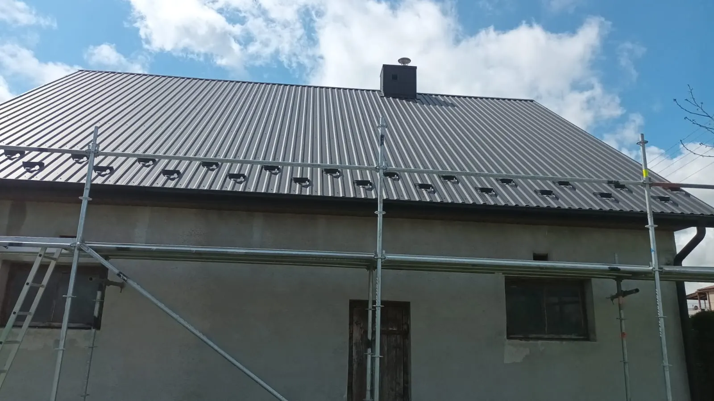

01
Więźby i konstrukcje
Wykonanie konstrukcji dachu oraz uzgodnionych prac murarskich związanych z jego budową.

Drwinia i okolice · Małopolska
Więźba, pokrycie, obróbki i wykończenie — jeden wykonawca, 15 lat doświadczenia. Potrzebujesz tylko rusztowania? Też je wynajmiemy.
Usługi dekarskie
Budujemy dachy głównie na domach prywatnych. Najpierw ustalamy zakres prac i sposób rozliczenia, dopiero potem ruszamy z realizacją.
Wykonanie konstrukcji dachu oraz uzgodnionych prac murarskich związanych z jego budową.
Przygotowanie dachu i montaż pokrycia zgodnie z ustalonym zakresem realizacji.
Obróbki, które dopełniają pokrycie i wykończenie dachu.
Estetyczne domknięcie prac dekarskich i dopracowanie widocznych detali.
Wynajem rusztowań
Oferujemy wynajem rusztowań aluminiowych i systemowych. Podaj lokalizację, planowany termin oraz zakres prac — omówimy dostępność i warunki wynajmu.

Realizacje
Prawdziwe zdjęcia z realizacji B-Projekt. Kliknij zdjęcie, aby je powiększyć.
O B-Projekt
B-Projekt to usługi dekarskie oparte na 15-letnim doświadczeniu w branży. Zajmujemy się konstrukcjami i pokryciami dachowymi oraz ich wykończeniem.
Zakres prac i sposób rozliczenia omawiamy przed rozpoczęciem.
Liczy się konstrukcja, pokrycie i każdy etap wykończenia.
Kontaktujesz się z nami w sprawie swojego dachu lub wynajmu rusztowania.
Kontakt
B-Projekt
Świniary 3, 32-709 Drwinia